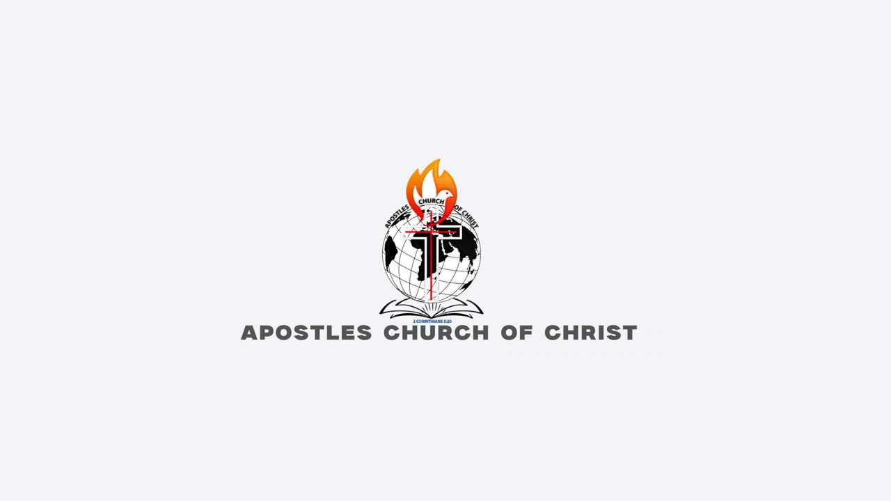

CHURCH ONLINE
One church.
Wherever you are.
Worship beyond the room.
Choose video or audio, and join the moment.
Church onlineDUBAI ·

Explore our church introduction, or visit our YouTube channel for broadcasts.
WORSHIP WITH US
One community.
Beyond four walls.
Follow our broadcasts and worship with us from wherever you are.
Or connect on FacebookTAKE THE WORD WITH YOU
More faith.
Less data.
Audio broadcasts will appear here when available. In the meantime, explore our worship videos.
Explore messages Same faith. Wherever life takes you.